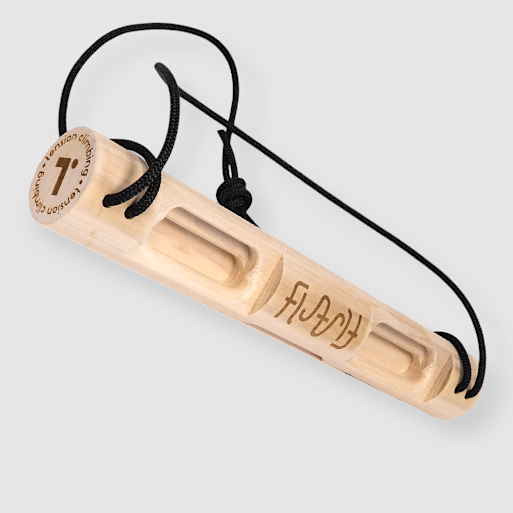
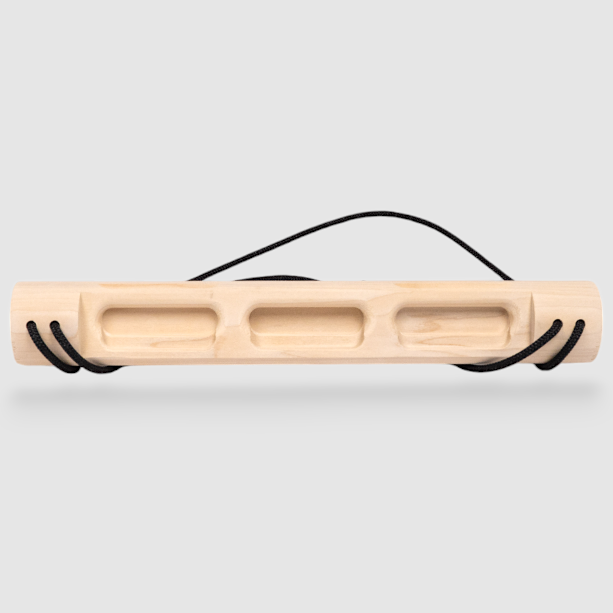
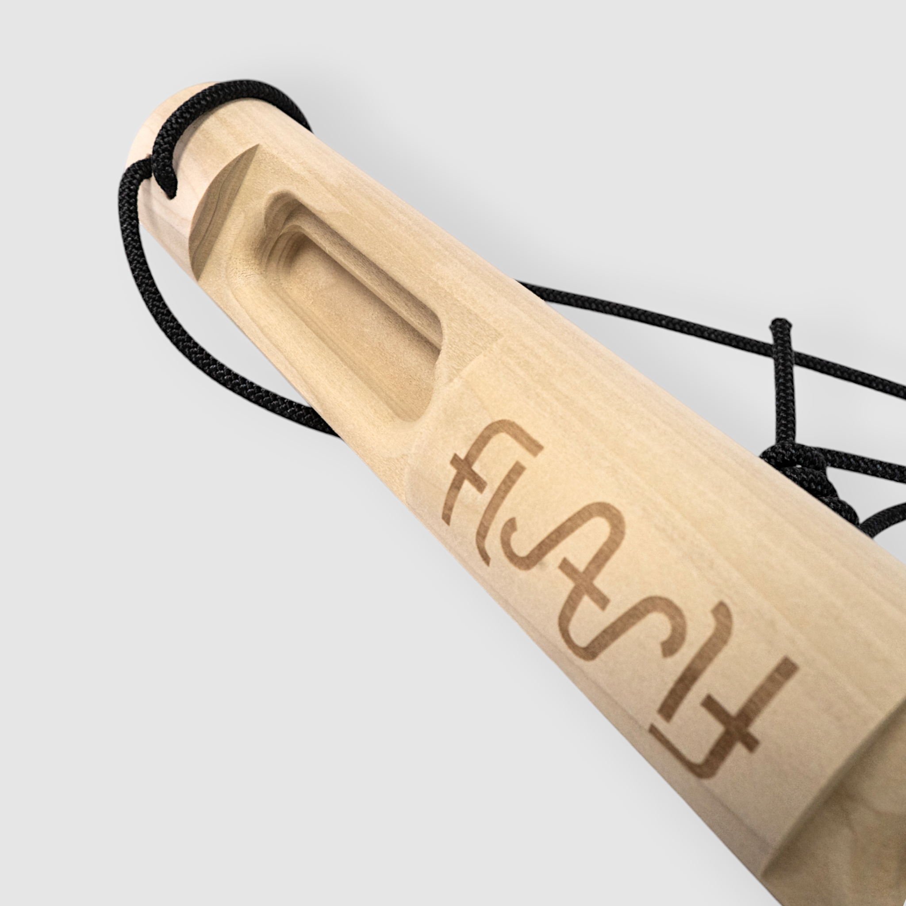
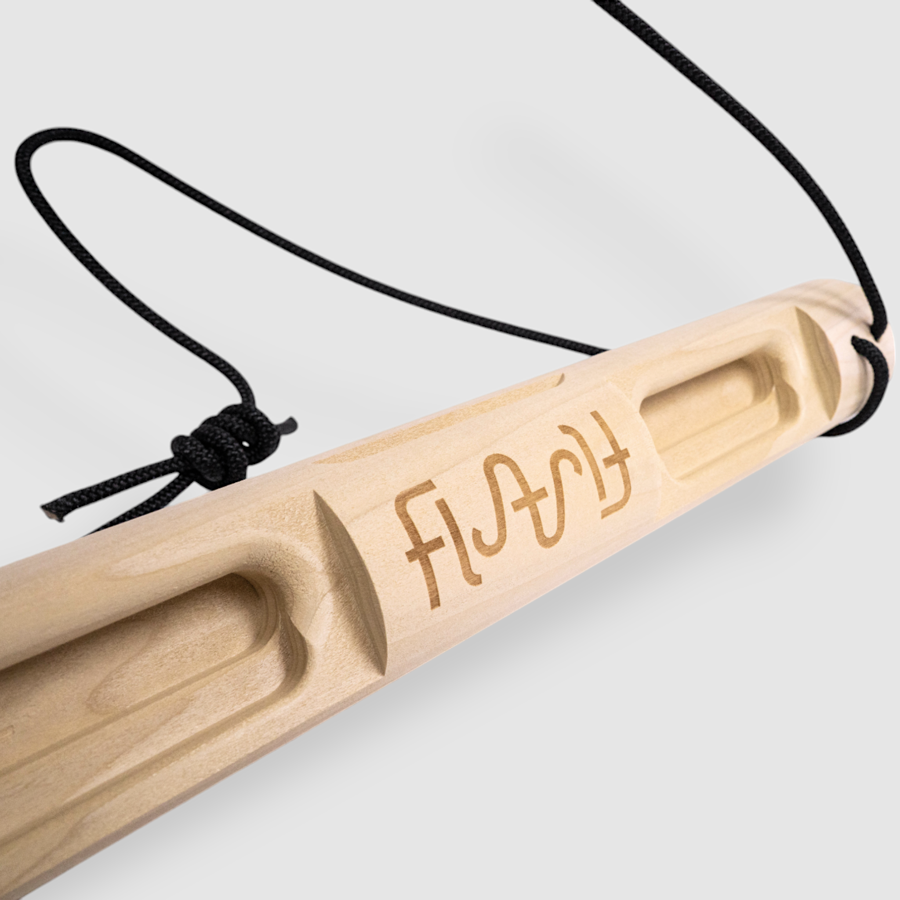

tension-flash-board
Four product views show the three-well and two-well faces, cylindrical body, shallow long ledges and four cord bores (two per end). Exterior return spans are visible. Existing seven contact IDs remain authoritative; photographs do not establish new training contacts. A graph of two bores plus exterior return at each end differs from a hidden U channel.
Source packet; approved by user 2026-09-29. No CAD geometry authored.
3. FlashBoard1.png

Tension Climbing source
Four product views show the three-well and two-well faces, cylindrical body, shallow long ledges and four cord bores (two per end). Exterior return spans are visible. Existing seven contact IDs remain authoritative; photographs do not establish new training contacts. A graph of two bores plus exterior return at each end differs from a hidden U channel.
SHA-256 aa00ab77e04c685acc4dee0e0704d25fd3165810387649a4e924bf3f7bfff148
approved by user 2026-09-29
4. FlashBoard2.png

Tension Climbing source
Four product views show the three-well and two-well faces, cylindrical body, shallow long ledges and four cord bores (two per end). Exterior return spans are visible. Existing seven contact IDs remain authoritative; photographs do not establish new training contacts. A graph of two bores plus exterior return at each end differs from a hidden U channel.
SHA-256 ae84f7d58def1c2f4e3b14c2e98ddf8e332b7f48e6c774312744b792d4ab97b4
approved by user 2026-09-29
5. FlashBoard3.png

Tension Climbing source
Four product views show the three-well and two-well faces, cylindrical body, shallow long ledges and four cord bores (two per end). Exterior return spans are visible. Existing seven contact IDs remain authoritative; photographs do not establish new training contacts. A graph of two bores plus exterior return at each end differs from a hidden U channel.
SHA-256 5753461d938adb19655556e8070f7361a0f9a1697752a861bacde4d240f0f63d
approved by user 2026-09-29
6. FlashBoard4.png

Tension Climbing source
Four product views show the three-well and two-well faces, cylindrical body, shallow long ledges and four cord bores (two per end). Exterior return spans are visible. Existing seven contact IDs remain authoritative; photographs do not establish new training contacts. A graph of two bores plus exterior return at each end differs from a hidden U channel.
SHA-256 7c078225890ae6d6975bff865e706e8858e7a56c3edc8df572637241ca6df200
approved by user 2026-09-29